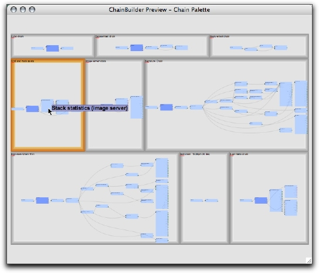

The chainbuilder can use existing chains as starting points for creation of new chains. Modules and links can be added and deleted from an existing chain to customize computation as needed for a specific purpose. Chainbuilder's chain palette provides a graphical view of all of the chains in a given OME installation. This window can be used to explore existing chains - in order to identify the best chain to use as a starting point for a new chain. Once the desired template chain has been identified, it can be dragged and dropped onto a chain creation canvas, where it can be modified and extended as needed.
Initially, the chain palette shows a 2-d graphical display of all of the chains in the OME installation. This overview provides a rough idea of the size and complexity of each of the chains in the system. Mousing over a chain will highlight the box surrounding the chain. A popup tooltip displaying the name of the chain will also be shown.
|
|
| Fig 3-1: The Chain module palette. |
The chain palette is a zoomable space: clicking on any part of a chain - or anywhere inside of the box surrounding the chain - will start a zooming animation which will end with the chain centered in the palette window. To zoom out, right-click or click on the background.
|
|
| Fig 3-2: The Chain palette. zoomed to a single chain. |
This zoomed view of the chain provides an overview of all of the links and nodes, but it might not provide all of the desired detail - especially for large chains. Mouse clicks will zoom in further, providing more detail. As before, right-clicks zoom out to a higher-level view.
Increasing levels of magnification provide more detail, but contextual information is lost. The chain palette overview window provides assistance for navigating and interpreting zoomed displays. This window provides a static view of the whole palette, regardless of the magnification level of the main palette window. When the view in the main palette is zoomed in to show details of a chain, a red rectangle - the "view rectangle" - in the overview window highlights the area that is displayed in the main palette. This rectangle also acts as a navigation tool: when it is dragged, the view in the main palette window pans to stay in sync. The magnification level in the main window can be adjusted by clicking (to zoom in) or right-clicking (to zoom out) the red rectangle. The view rectangle is hidden when the view in the main palette window is zoomed out to show the entire palette.

|
| Fig 3-3: When the chain palette is zoomed into a chain, the view rectangle in the overview window provides context for the user, while providing a draggable control that can be used to pan the view. |
Like the module palette, the chain palette can also be used to provide feedback regarding potential linkages between modules. If the mouse is moved over a module in a chain, all of the modules (in other chains) that that modules might link to are highlighted in dark blue. In fact, this highlighting is synchronized with the module palette: highlighting a module in one window will lead to the highlightting of all potential link targets in both windows.
|  |
| Fig 3-4: Mousing over a module in the chain palette leads to highlighting of all modules that might be lined to the selected module. |
{kind=link}